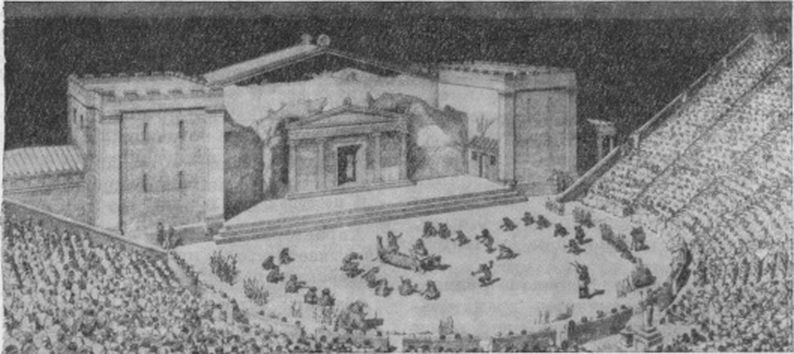
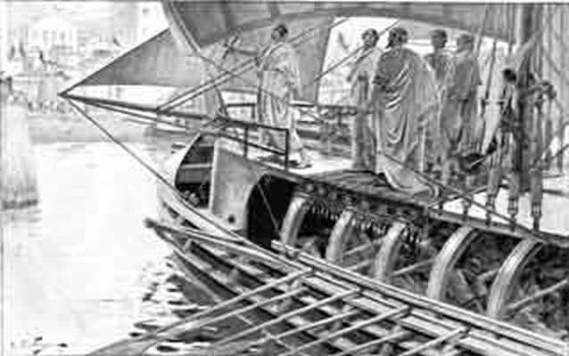

Итак, в предыдущем рассказе были посеяны семена сомнений относительно общепринятого мнения о числе ярусов, или этажей на триере. Но вот так взять и отринуть стандартную модель как не соответствующую действительности мы не можем, поскольку существует ряд фактов, которые не объяснить, если не предположить «многоэтажного» или по крайней мере «ступенчатого» устройства триеры.
Самыми серьезными из этих фактов, на мой взгляд, являются некоторые замечания, с которыми мы встречаемся в комедиях Аристофана. Почему такое значение мы придаем этому греческому комедиографу? Просто потому, что его творения не пылились на полках, а демонстрировались на сцене для массовой публики, среди которых имелось немало тех, кто был гребцом на триерах. Так что любая фальшь могла быть тут же замечена компетентным зрителем.

Реконструкция постановки комедии Аристофана «Лягушки» в античном театре
Комедия Аристофана «Лягушки» была поставлена в 405 г. до н.э., в эпоху господства триер в греческом флоте. Всего лишь годом раньше произошла крупнейшая морская битва Пелопоннеской войны при Аргинусских островах, в которой афинский флот, включавший триеры, разгромил спартанцев. Но несмотря на победу, потери афинян были большими – двадцать пять кораблей вместе с экипажами. Спасти афинских моряков помешал сильный ветер и шторм на море, но виновными в их гибели были признаны стратеги, которых приговорили за это к смертной казни. После этих событий Аристофан, и ранее не жаловавших военное сословие, осмеял и очернил как мог моряков триер, в первую очередь гребцов корабля Парал, отказавшихся, по версии афинского правосудия, спасать утопающих товарищей.
Скажем несколько слов о том, что собой представлял Парал (Πάραλος, назван в честь мифологического сына Посейдона) — афинский священный корабль, теорида (не удивляйтесь поэтому, когда в английской литературе встретите термин Theoretical ship), и посольская триера Афинского флота в конце V в. до н. э. Он упоминается в литературных и эпиграфических источниках классического периода чаще, чем любой другой корабль; Парал участвовал практически во всех известных нам афинских дипломатических миссиях V-IV веков до н.э. Он доставлял священные посольства на праздники и игры в другие государства. Его использовали также для особых случаев, таких, как перевозка послов к оракулу в Дельфы и перевозки высокопоставленных афинских государственных деятелей, казенных денег и доставки важных депеш. В связи с этим служить на нём было разрешено только афинским гражданам. Экипаж Парала состоял из членов одного рода паралей (Πάραλοι), поэтому отличался единством и сплоченностью. Во время войны священный корабль являлся флагманским, на нем находился афинский главнокомандующий.

Священная трирема доставляет афинских послов к Александру Македонскому. 334 г. до н.э.
Помимо Парала в афинском флоте большую известность получили еще два священных корабля: Делия (служившая исключительно для доставки посольств на остров Делос), и Саламиния, которые имеют также славную историю, но нас в сегодняшнем рассказе интересует только Парал, действия экипажа которого и осуждает Аристофан.
У Аристофана в «Лягушках» речь идет о споре двух античных трагиков: Эсхил обвиняет Еврипида в том, что он
…снизил значение трагедии, например, одел царей в лохмотья, чтобы «жалкими с виду на глазах у людей появлялись они». Еврипид научил людей празднословию, от этого опустели палестры (частные гимнастические школы в Древней Греции – g._g.) и изнежились зады болтливых молокососов. Он стал показывать на сцене «сводней и дев, рожающих в храмах» . Вот откуда и происходит то, что город полон писаками, шутами, развлекающими народ обезьяньими шутками и не перестающими надувать его. И в то же время, поскольку гимнасии забыты, нет никого, кто мог бы нести факел на состязаниях… Эсхил воспитывал своей поэзией бойцов Марафона и Саламина, а Еврипид испортил людскую породу. Всюду теперь мелкие люди, мелкие нездоровые страсти. Воздействие, оказываемое еврипидовской трагедией на нравственные устои общества, губительно.
В.В. Головня. «История античного театра»
Как все это напоминает сегодняшние дискуссии! Но мы не будем вдаваться в идейное содержание комедии Аристофана, нас интересует сугубо технический вопрос.
Приведем сейчас несколько переводов одного отрывка из «Лягушек», а затем попробуем проанализировать имеющуюся в них информацию.
Эсхил
Научил ты весь город без толку болтать, без умолку судачить и спорить.
Ты пустынными сделал площадки палестр, в хвастунов говорливых и вздорных
Превратил молодежи прекраснейший цвет. Ты гребцов обучил прекословить
Полководцам и старшим. А в годы мои у гребцов только слышны и были
Благодушные крики над сытным горшком и веселая песня: «Эй, ухнем!»
Дионис
От натуги вдобавок воняли они прямо в рожу соседям по трюму,
У товарищей крали похлебку тишком и плащи у прохожих сдирали.
Нынче спорят и вздорят, грести не хотят и плывут то сюда, то обратно.
Пер. А.Пиотровского
Эсхил
Ты афинян затем научил разговорами и болтовней заниматься,
Отчего стали пусты палестры и зад у болтливых мальчишек истерся;
И от этого же паралийцы начальников слушать никак не хотели,
А при мне они только лишь хлеба умели просить да кричать: эй, за весла!
Дионис
Это верно; а также умели сидящему ниже гребцу прямо в
рот…
Да еще сотрапезника… да, на берег выйдя, ограбить.
А теперь-то упрямятся; больше грести не хотят, а плывут как попало.
Перевод Цветкова
Эсхилъ.
И потомъ въ болтовнѣ упражняться пустой, вь празднословіи всѣхъ обучилъ ты:
Опустѣли палестры съ твоей болтовни, и зады съ болтовни пообтерлись
У болтливыхъ мальчишекъ. Твоя болтовня поморянъ ужъ давно научила
Говорить поперекъ предержащимъ властямъ. А тогда то, какъ жилъ я на свѣтѣ,
Эти люди умѣли одно: говоритъ про жратво, да дубинушку ухнутъ.
Діонисъ.
Такъ, клянусь Аполлономъ, да вѣтеръ пустить прямо въ рыло сосѣду по лодкѣ,
Да обгадить его же за сытнымъ столомъ, да по берегу грабить прохожихъ.
А теперь знай все спорятъ и такъ не гребутъ проворно туда и обратно.
Перевод Д.Шестакова
Читая эти строки, трудно понять, какое отношение они имеют к нашей теме. Объективности ради я собрал здесь отрывки из всех переводов «Лягушек» на русский язык, которые сумел найти (исключив те из них, которые были сделаны с европейских переводов комедии, а не с греческого оригинала). Приведены же эти строки с единственной целью – стать контекстом для строки:
«От натуги вдобавок воняли они прямо в рожу соседям по трюму» (Пиотровский)
или
«Такъ, клянусь Аполлономъ, да вѣтеръ пустить прямо въ рыло сосѣду по лодкѣ»
(Шестаков).
У Цветкова здесь (по соображениям цензуры? Цитата взята из книги, вышедшей в издательстве «Просвещение» в 1965 г.) и вообще стоит многоточие: «умели сидящему ниже гребцу прямо в рот…»
Нас не волнуют эстетические позиции переводчиков, мы хотим найти адекватное значение слов Аристофана в подлиннике комедии «Лягущки»:
νὴ τὸν Ἀπόλλω, καὶ προσπαρδεῖν γ᾽ ἐς τὸ στόμα τῷ θαλάμακι
Клянусь Аполлоном, и пускать ветры в рот таламиту
Напомним, что согласно господствующей теории триеры ее гребцы делились на три категории – таламиты, зигиты и траниты – каждая из которых занимала свой ярус. Таламиты получили свое название от θάλαμος (замкнутое внутреннее помещение; на корабле – трюм), в котором они сидели. Практически все исследователи трактуют приведенную строку из Аристофана единогласно: лицо таламита было на уровне зада другого гребца, названия которого Аристофан не приводит. За него это сделали схоласты той эпохи, схолии которых были обобщены и собраны в одном томе Scholia Græca in Aristophanem. Об авторе этого сочинения и времени его появления известный наш антиковед Сергей Иванович Соболевский в книге «Аристофан и его время» пишет: «Неизвестный грамматик неизвестного времени (вероятно, IV или V века н.э.)». Не отрицая значения схолий в толковании языка Аристофана (ведь значительная часть из них написана еще Александрийскими и Пергамскими учеными, известными своей эрудицией), все же будем иметь в виду многие века, прошедшие между появлением комедии Аристофана и публикацией схолий.
Таким образом, если все обстоит так, как мы это описали, то таламит сидел на уровне ниже и слегка позади другого гребца; т.е., речь в комедии идет о двухъярусном корабле, иначе почему только таламит получал свою порцию «в рыло». Т.е. как бы исключался средний ряд – зигиты, которым подобные неудобства грозили бы со стороны транитов, сидящих выше них. Получается, что, с одной стороны, опровергается теория Тарна о размещении всех гребцов на одном уровне, о которой мы писали выше, а с другой – нет никаких фактов в поддержку трехэтажной триеры. Ни в одном источнике пятого века до н.э. нет упоминаний о гребцах среднего яруса – зигитах. Они встечаются только лишь в упомянутых выше схолиях к Аристофану. («Лягушки», 1074). Я приведу текст этих схолий на языке оригинала, но не осмелюсь делать точный их перевод.
Schol. Frogs 1074 τῷ θαλάμακι· τῷ κωπηλατοῦντι ἐν τῷ κάτω μέρει τῆς τριηροῦς· τῷ θαλάμακι· οἱ θαλάμακες ὀλίγον ἐλάμβανον μισθὸν διὰ τὸ κολοβαῖς χρῆσθαι κώπαις παρἀ τὰς ἄλλας [Γ] τάξεις τῶν ἐρετῶν ὅτι μᾶλλον ἦσαν ἐγγὺς τοῦ ὕδατος. ∥ ἦσαν δὲ τρεῖς τάξεις τῶν ἐρετῶν· καὶ ἡ μὲν κάτω θαλαμῖται, ἡ δὲ μέση ζυγῖται, ἡ δὲ ἄνω θρανῖται. θρανίτης οὖν ὁ πρὸς τὴν πρύμναν, ζυγίτης ὁ μέσος, θαλάμιος ὁ πρὸς τὴν πρῷραν.
Scholia Græca in Aristophanem (1877), стр.305
Тарн, который собрал все эти схолии в своей работе «The Greek Warship» (1905), отмечает, что текст до знака ∥ взят из так называемой Равеннской рукописи схолий (Codex Ravennas), переведенной и опубликованной Резерфордом (W. G. Rutherford, 1895), в то время как следующая за этим знаком часть взята из Венецианского кодекса (codex Venetus), именно в этой части мы и встречаем упоминание о зигитах. Перевод текста в нашем отрывке, приведенном после знака ∥, полностью зависит от значения слов ἄνω и κάτω. Если взять общепринятые значения этих слов «выше» и «ниже», соответственно, то получаем описание стандартной модели триеры: траниты сидят на верхнем ярусе, зигиты – посредине, а таламиты – внизу, ближе всех к воде. Но Тарн, например, в упомянутой выше работе, выдвинул версию, что ἄνω означает «на корме», а κάτω – «в носу», тогда смысл данного отрывка из схолий меняется: гребцы на афинской триере располагались не поярусно, а группами вдоль корабля: траниты в корме, зигиты по центру, а таламиты – в носу.
Продолжим изучать существующие варианты распределения гребцов на триере в следующий раз.